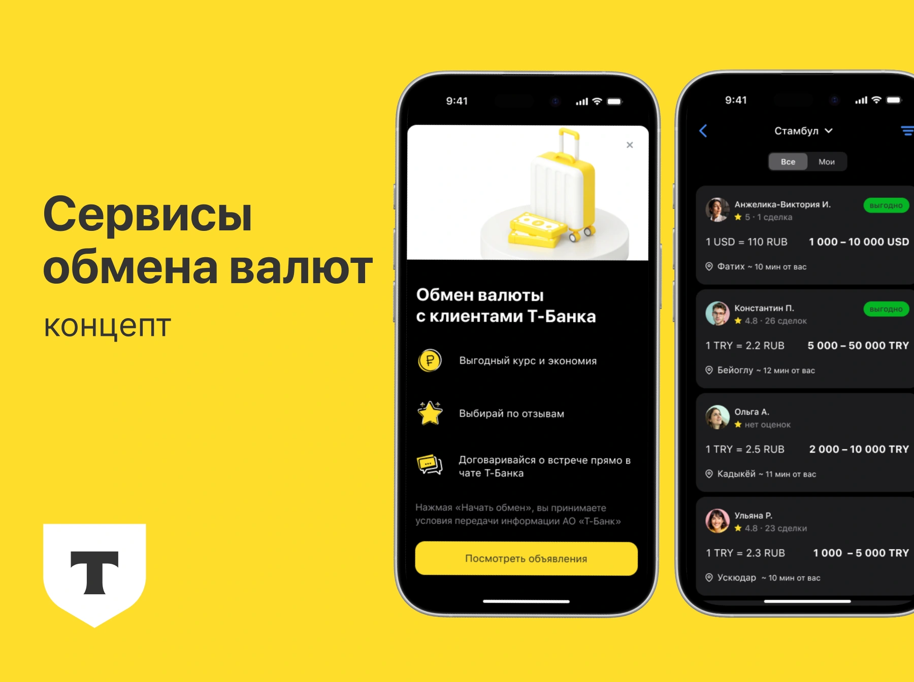
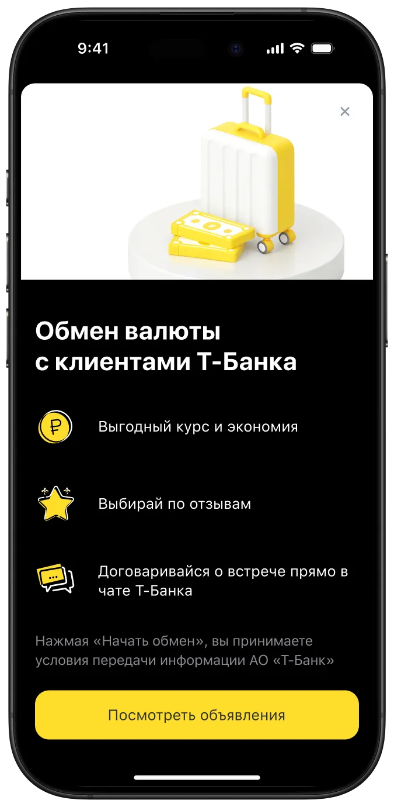

Концепт · 2025
Поиск банкоматов и обмен валюты между клиентами за границей


Проанализировала данные из ТЗ. Треть пользователей не могут найти банкоматы за границей, каждый пятый не знает, где можно снять деньги. При этом 30% клиентов регулярно выезжают — спрос на сервис есть.
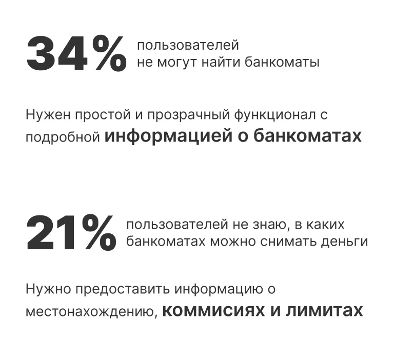
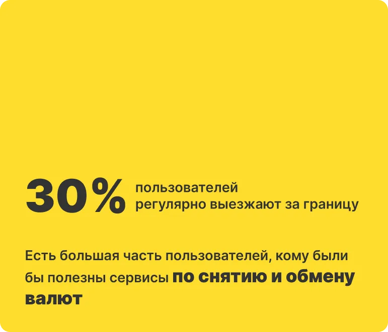
Нужен простой и прозрачный функционал с подробной информацией о банкоматах — лимиты, комиссии, курс.
Сервис логично встроить в раздел «Путешествия» — он уже востребован у ЦА, не нужно приучать пользователей к новой точке входа.
Это усилит раздел, повысит лояльность и даст конкурентное преимущество — ни один банк в РФ пока не предлагает P2P обмен валюты внутри приложения.
Провела интервью с тремя пользователями Т-Банка 25–38 лет, имеющими опыт обмена валюты и снятия наличных за границей.
Главный инсайт: пользователи не доверяют обменникам в незнакомых странах и предпочитают решать вопрос с валютой через знакомые инструменты. Это подтвердило — сервис должен жить внутри экосистемы банка, где уже есть доверие.
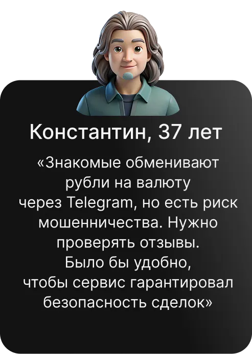
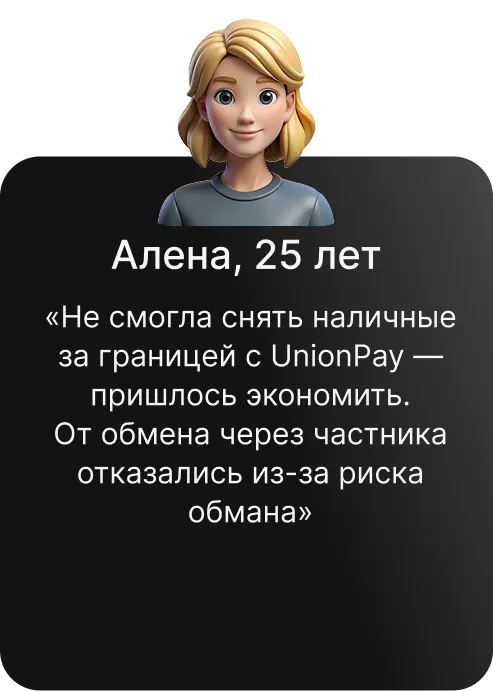
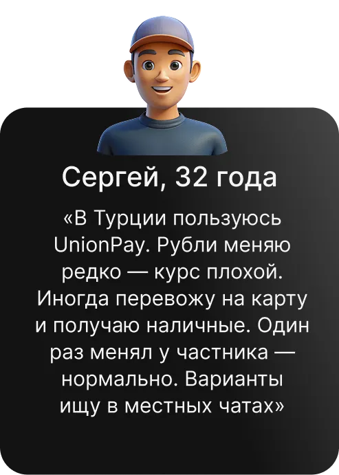
Разработала пользовательские сценарии и информационную архитектуру. Указала точку входа из раздела «Путешествия» и как контент связан между собой — от поиска банкомата до завершения сделки обмена.
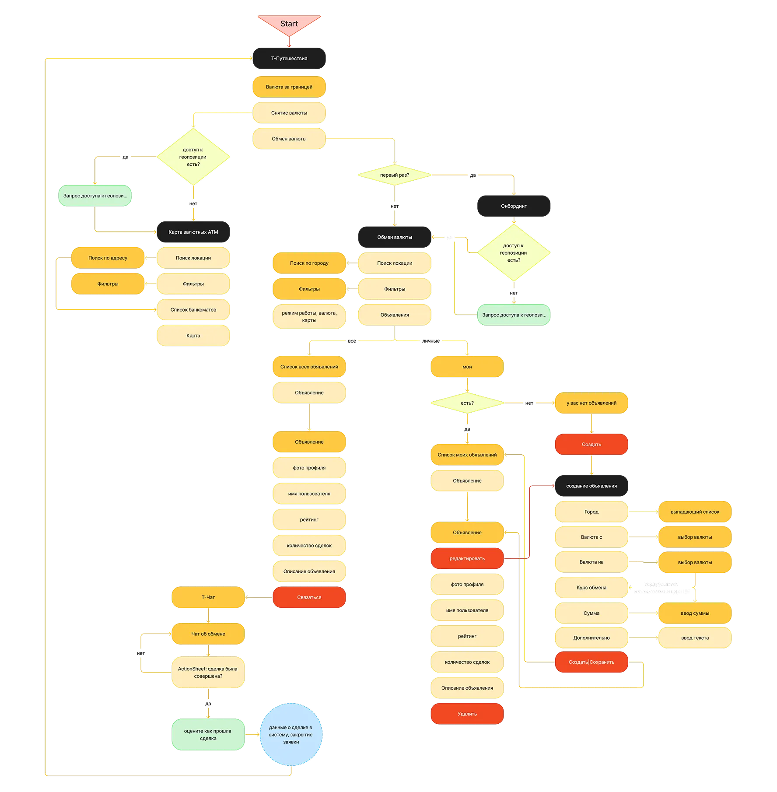
Сервис встроен в раздел «Путешествия». Это усиливает уже востребованный раздел и повышает лояльность пользователей.
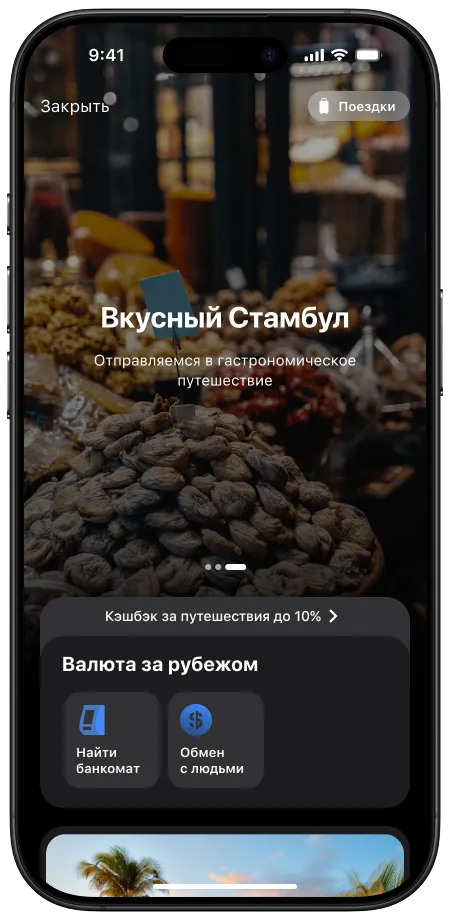
За основу взята существующая фича банка. Добавлены фильтры, а в карточку банкомата — лимиты на снятие, комиссии и курс конвертации. Переиспользование существующего компонента экономит время разработки и сохраняет консистентность.
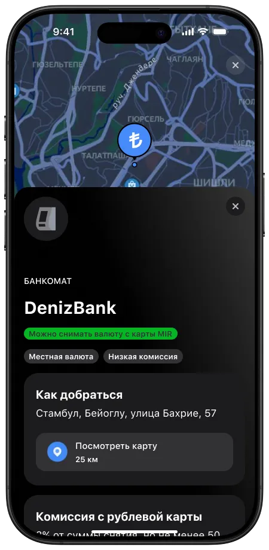
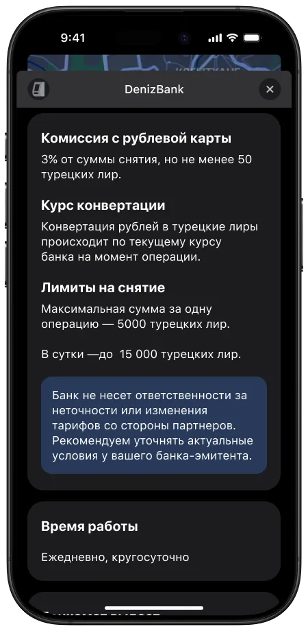
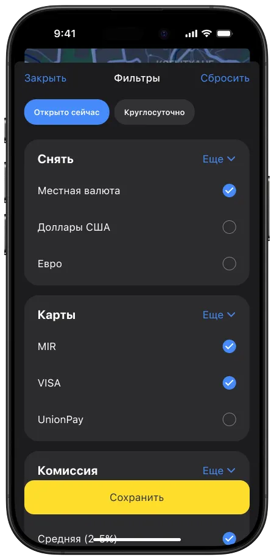
Площадка объявлений внутри приложения. Автозаполнение валюты и курса по выбранному городу. Безопасность обеспечивается верификацией клиентов банка, рейтингом и количеством сделок.
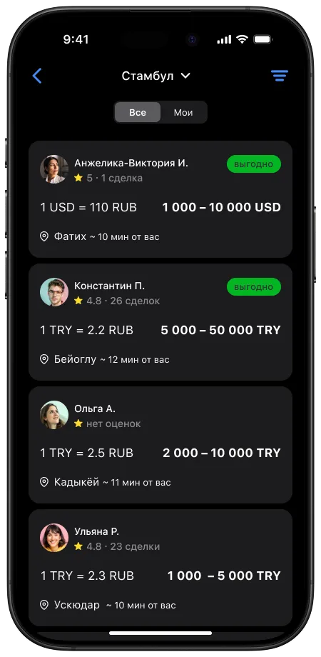
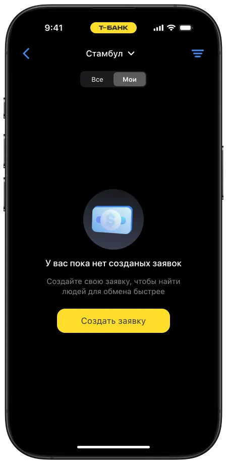
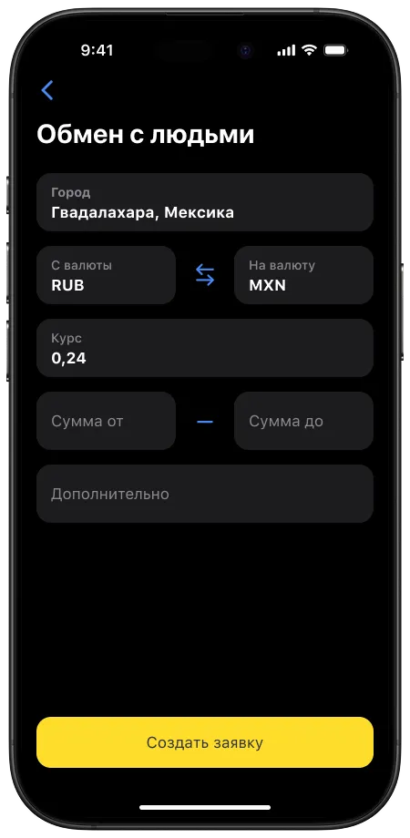
Обсуждение деталей обмена и встречи внутри приложения, без перехода в сторонние мессенджеры.
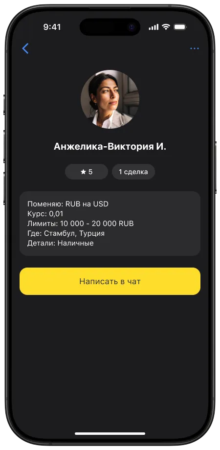
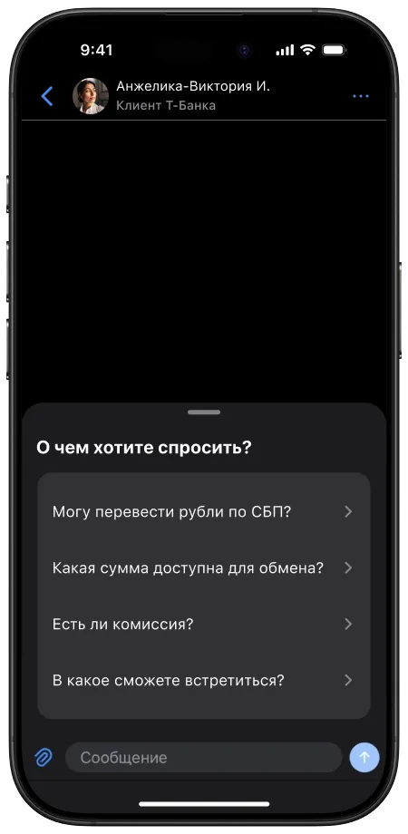